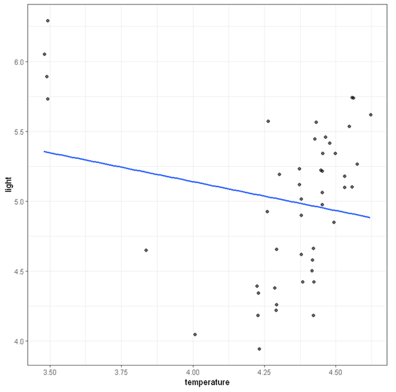
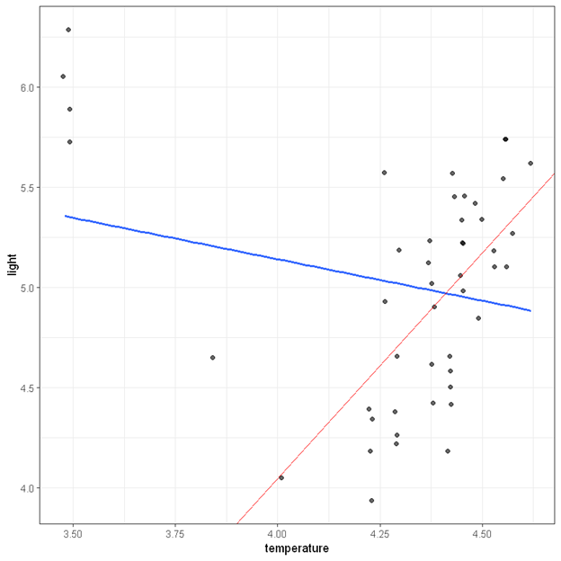

Outliers and violation of distributional assumptions are common in many area of research. These issues might introduce substantial bias in the analysis and potentially lead to grossly incorrect inference. Traditionally, outliers are identified through manual inspection of the data; violation of normality are often addressed by data transformation. Other forms of assumption violation, such as heterogeneity in variance, can be more challenging to address. Robust regression is a technique that can reduce the impact of outliers and other forms of assumption violations.
In this example, we will use the Stars dataset from the Robustbase package. We have built this example data into StatsNotebook and it can be loaded using instruction here.
In this dataset, there are two variables.
The figure below shows the scatterplot between temperature and light with a regression line. At first glance, there appears to be a downward trend. However, this trend might be caused by only a few outliers at the top left corner.

We will now demonstrate using robust regression to adjust for these outliers.
Steps for running Robust regression in StatsNotebook is nearly the same as running linear regression.
The codes are for robust regression are nearly the same as those for linear regression, except that we use the lmrob function from the robustbase package instead of the lm function for linear regression.
library(robustbase)
res <- lmrob(light ~ temperature,
data=currentDataset)
summary(res)
cbind(coef(res),confint(res, level = 0.95))
"Chan, G. and StatsNotebook Team (2020). StatsNotebook. (Version 0.1.0) [Computer Software]. Retrieved from https://www.statsnotebook.io"
"R Core Team (2020). The R Project for Statistical Computing. [Computer software]. Retrieved from https://r-project.org"
The outputs from robust regression are also very similar to those from linear regression, except that the observations are now weighted based on how deviant their are, and also robust standard error will be computed for model estimates. After adjusting for a few outliers, we find that temperature is positively associated with light intensity, b = 2.25, 95% CI (0.70, 3.80), p =.005. We also show the regression line estiamted from robust regression in the figure below. The blue line is the regression line from ordinary linear regression and the red one is the regression line from robust regression.
Call:
lmrob(formula = light ~ temperature, data = currentDataset)
\--> method = "MM"
Residuals:
Min 1Q Median 3Q Max
-0.80959 -0.28838 0.00282 0.36668 3.39585
Coefficients:
Estimate Std. Error t value Pr(>|t|)
(Intercept) -4.9694 3.4100 -1.457 0.15198
temperature 2.2532 0.7691 2.930 0.00531 **
---
Signif. codes: 0 '***' 0.001 '**' 0.01 '*' 0.05 '.' 0.1 ' ' 1
Robust residual standard error: 0.4715
Multiple R-squared: 0.3737, Adjusted R-squared: 0.3598
Convergence in 15 IRWLS iterations
Robustness weights:
4 observations c(11,20,30,34) are outliers with |weight| = 0 ( < 0.0021);
4 weights are ~= 1. The remaining 39 ones are summarized as
Min. 1st Qu. Median Mean 3rd Qu. Max.
0.6533 0.9171 0.9593 0.9318 0.9848 0.9986
Algorithmic parameters:
tuning.chi bb tuning.psi refine.tol
1.548e+00 5.000e-01 4.685e+00 1.000e-07
rel.tol scale.tol solve.tol eps.outlier
1.000e-07 1.000e-10 1.000e-07 2.128e-03
eps.x warn.limit.reject warn.limit.meanrw
8.404e-12 5.000e-01 5.000e-01
nResample max.it best.r.s k.fast.s k.max
500 50 2 1 200
maxit.scale trace.lev mts compute.rd fast.s.large.n
200 0 1000 0 2000
psi subsampling cov
"bisquare" "nonsingular" ".vcov.avar1"
compute.outlier.stats
"SM"
seed : int(0)
######################################################
2.5 % 97.5 %
(Intercept) -4.969388 -11.8375510 1.898775
temperature 2.253161 0.7041936 3.802129
